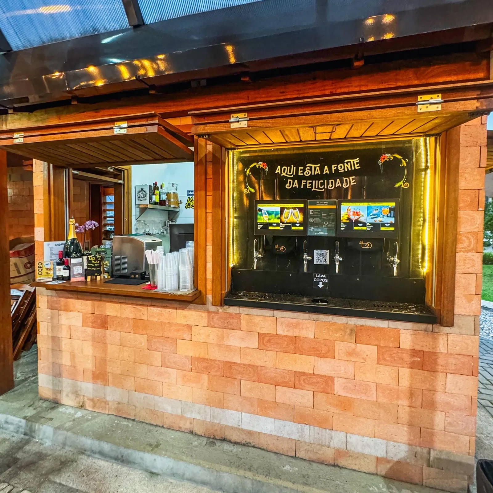

Bier Haus
Aproveite o melhor do chopp, espumante, vinho e muito mais no coração da praça central de Rancho Queimado.
Sabores autênticos da serra catarinense
Descubra a rica gastronomia de Rancho Queimado, onde tradição alemã e italiana se encontram com ingredientes frescos da região.
Aproveite o melhor do chopp, espumante, vinho e muito mais no coração da praça central de Rancho Queimado.

Cafeteria especializada em cafés especiais e doces artesanais, perfeita para momentos de pausa com vista para as montanhas.

Bistrô contemporâneo que combina técnicas modernas com ingredientes regionais, criando pratos sofisticados em ambiente acolhedor.

Restaurante com culinária caseira e receitas tradicionais da serra, valorizando produtos locais e o sabor autêntico da região.
Vinícola boutique especializada em vinhos de altitude, oferecendo degustações e experiências enogastronômicas únicas.

Experiência de colheita própria de frutas frescas e orgânicas, conectando visitantes diretamente com a produção local.

Pizzaria artesanal com forno a lenha, massa fermentada naturalmente e ingredientes premium da região serrana.

Delicatessen com produtos artesanais, conservas caseiras, geleias e iguarias típicas da culinária serrana.

Restaurante integrado à natureza, oferecendo experiência gastronômica em meio à mata atlântica com pratos regionais.

Café colonial tradicional com influência alemã, servindo cafés especiais, bolos caseiros e cucas artesanais.

Queijaria artesanal premiada, produzindo queijos de alta qualidade com leite fresco de vacas criadas na propriedade.
Restaurante sofisticado com proposta gastronômica contemporânea, destacando ingredientes orgânicos e sustentáveis da região.

Queijaria familiar especializada em queijos maturados, oferecendo tours pela produção e degustações guiadas.
Cozinha autoral com foco em técnicas contemporâneas e valorização de produtos locais, criando harmonias surpreendentes.